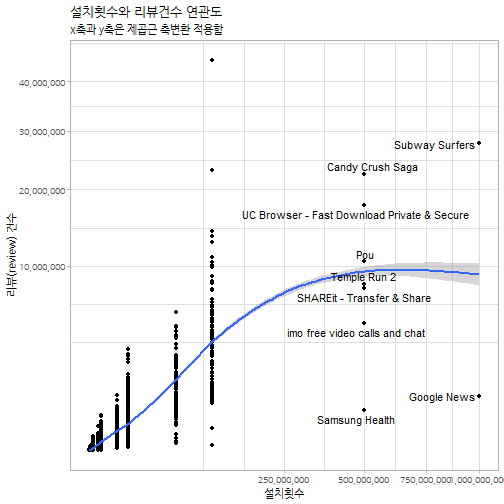

xwMOOC 데이터 제품
앱 게임 - 구글 플레이(Google Play)
Google Play Store Apps 데이터 1
캐글, “Google Play Store Apps -Web scraped data of 10k Play Store apps for analysing the Android market.” 웹사이트에서 약 4개월전에 Google Play Store를 통해서 공개된 데이터를 다운로드하여 분석한다.
데이터 정제작업
데이터를 불러와서 분석이 가능한 형태로 문자형 변수를 숫자형으로 변환시킨다.
library(tidyverse)
library(janitor)
library(lubridate)
gps_dat <- read_csv("data/googleplaystore.csv") %>%
clean_names()
gps_df <- gps_dat %>%
mutate(installs = parse_number(installs),
size = parse_number(ifelse(str_detect(size, "k"), 0, size)),
reviews = as.numeric(reviews),
price = parse_number(price),
last_updated = mdy(last_updated),
min_android_ver = ifelse(str_detect(android_ver, "Varies with device"), NA, android_ver),
min_android_ver = str_extract(min_android_ver, "^[0-9]\\.[0-9]")) %>%
filter(type %in% c("Free", "Paid")) NA 및 중복데이터
중복된 행이 있는지 확인하고 결측값(NA)이 변수를 검사한다. “Varies with device”를 NA로 치환했기 때문에 발생된 경우다. rating이 없는 경우는 설치수(installs)가 적어서 발생된 경우다.
gps_df %>%
summarise_all(funs(sum(is.na(.)))) %>%
gather(`변수`, `결측값`) %>%
filter(`결측값` > 0) %>%
arrange(desc(`결측값`))# A tibble: 6 x 2
변수 결측값
<chr> <int>
1 size 1694
2 rating 1473
3 min_android_ver 1363
4 category 1
5 genres 1
6 current_ver 1gps_eda_df <- gps_df %>%
drop_na() %>%
select(app, category, rating, reviews, size, installs, type, price, content_rating, genres, last_updated, min_android_ver) %>%
group_by(app) %>%
arrange(desc(last_updated)) %>%
mutate(index = row_number()) %>%
filter(index == 1) %>%
ungroup()
# gps_df <- gps_eda_df[duplicated(gps_eda_df), ]탐색적 데이터 분석(EDA)
데이터프레임에 담긴 데이터에 대한 정제작업이 끝나게 되면 \(X\), \(Y\)에 대한 인과관계 설정 및 추가로 필요한 상관분석을 포함한 분석 모형을 구축하게 된다.

평점(rating)과 리뷰(reviews) 관계
평점(rating)과 리뷰(reviews)는 평점이 올라감에 따라 리뷰건수도 증가하는 관계가 보이지만 특정 평점 4.5를 넘어서면 리뷰건수가 줄어드는 것이 확인된다.
library(ggrepel)
gps_eda_df %>%
ggplot(aes(x=rating, y=reviews, label=app)) +
geom_jitter() +
geom_smooth() +
scale_x_continuous(breaks = seq(0,5,0.5)) +
scale_y_sqrt(labels = scales::comma) +
theme_light(base_family = "NanumGothic") +
labs(x="평점", y="리뷰(review) 건수", title="평점(rating) 리뷰건수(review) 연관도",
color="개발사") +
theme(legend.position = "none") +
geom_text_repel(data = gps_eda_df %>% filter(reviews > 7500000))설치수(installs)와 리뷰(reviews) 관계
당연할 수 있지만 설치수(installs)와 리뷰(reviews) 관계는 설치수가 늘어나면 리뷰수가 증가하지만 일정 설치수 이상되는 경우 표본이 매우 작아 더 이상 증가된다고 보기는 어려운 점이 있는데 설치수는 많으나 리뷰가 적은 몇몇 앱에 대해서는 추가 조사가 필요해 보인다.
library(extrafont)
loadfonts()
library(ggrepel)
gps_eda_df %>%
ggplot(aes(y=reviews, x=installs, label=app)) +
geom_point()+
geom_smooth() +
scale_x_sqrt(labels = scales::comma) +
scale_y_sqrt(labels = scales::comma) +
theme_light(base_family = "NanumGothic") +
labs(x="설치횟수", y="리뷰(review) 건수", title="설치횟수와 리뷰건수 연관도",
subtitle="x축과 y축은 제곱근 축변환 적용함",
color="개발사") +
theme(legend.position = "none") +
geom_text_repel(data = gps_eda_df %>% filter(installs > 250000000))
설치(install)에 영향을 주는 요인
reviews, rating, price 순으로 설치수에 영향을 주고 있다.
library(randomForest)
gps_mod_df <- gps_eda_df %>%
select(rating, reviews, installs, type, price, content_rating, min_android_ver, category, genres) %>%
mutate_if(is.character, as.factor) %>%
mutate(category = fct_lump(category, 10),
genres = fct_lump(genres, 10))
gps_install_rf <- randomForest(installs ~ ., data= gps_mod_df, importance=TRUE, na.action=na.omit)
importance(gps_install_rf) %>%
as.data.frame() %>%
rownames_to_column(var="variable") %>%
arrange(desc(`%IncMSE`)) variable %IncMSE IncNodePurity
1 reviews 14.6706013 2.596720e+18
2 rating 8.9416673 4.162981e+17
3 type 3.1663842 4.176822e+15
4 price 1.0331513 4.414696e+15
5 genres 0.9362970 7.276255e+16
6 min_android_ver -0.3724012 1.681086e+17
7 content_rating -2.4911336 9.657747e+16
8 category -2.9701260 1.408727e+17reviews, rating, price 변수를 대상으로 설치건수(installs) 상관을 시각화하면 다음과 같다.
gps_eda_df %>%
select(installs, reviews, rating, price) %>%
gather(key, value, -installs) %>%
ggplot(aes(x=value, y=installs, group=key)) +
geom_point()+
geom_smooth() +
scale_x_sqrt(labels = scales::comma) +
scale_y_sqrt(labels = scales::comma) +
theme_light(base_family = "NanumGothic") +
labs(x="", y="설치(installs) 건수", title="설치횟수와 중요변수 연관도",
subtitle="x축과 y축은 제곱근 축변환 적용함",
color="개발사") +
theme(legend.position = "none") +
facet_wrap(~key, scale="free")결론 및 제언
설치건수(install)을 높이기 위해서 가격을 무료에 가깝게 하고 등급(rating)을 4.0~4.5사이에 위치시키고, 리뷰건수를 높인다.